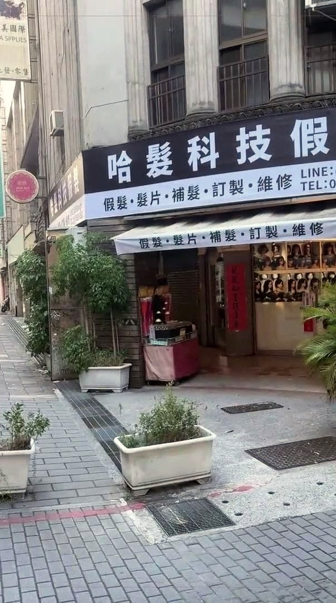

先看重點
哈髮科技假髮在台北市大同區鄭州路23號（三角窗），台北地下街 Y13、Y15 出口旁。最推薦走 Y13：地下街有電扶梯上到地面，出來穿過小公園約 30 秒就到，很近。
台北車站到店：7 個步驟
- 一
從台北車站出發
從台北車站出發，跟著「桃園機場捷運」的指標走。
- 二
搭電扶梯下樓
往市民大道、台北轉運站的方向，搭電扶梯下樓，下樓後繼續往前走。
- 三
跟著 M1、M2 指標直走
跟著 M1、M2 和「台北地下街」的指標直走，繼續往 M1、M2 的方向。
- 四
搭電扶梯上樓，經過京站
搭電扶梯上樓，往京站、台北轉運站的方向。經過京站後，跟著指標往台北地下街走。這段路比較長，照著台北地下街的指標直直走就對了，沿路都有指示牌，不容易走錯。
- 五
沿台北地下街走到 Y13
看到 Y3 的指標，沿著台北地下街直走；跟著 Y5 到 Y27 的方向往 Y13 走，再往前一點就是 Y13。搭 Y13 出口電扶梯上樓，這段電扶梯比較長，請站穩扶好，上樓以後就到地面了。
- 六
穿過小公園
出 Y13 出口後，直直穿過小公園。穿過小公園約 30 秒就到，很近。
- 七
看到招牌就到了
看到「哈髮科技假髮」黑色招牌、條紋遮雨棚就到了！地址：台北市大同區鄭州路23號（三角窗），歡迎進來看看。
兩條路線怎麼選
Y13 出口
台北地下街 Y13 出口有電扶梯上到地面，帶行李、陪家人來都比較輕鬆。上來後直直穿過小公園約 30 秒就到，很近。
Y15 出口
Y15 出口是樓梯，從 Y15 上來，出來就是店門口。
從新北搭捷運來
每區先列轉乘最少的路線，都先到台北車站。
- 板橋（板橋站）：板南線往南港展覽館方向，直達台北車站，約 5 站。
- 土城（土城站）：板南線往南港展覽館方向，直達台北車站，約 9 站。
- 新莊（新莊站）：中和新蘆線（新莊線）往南勢角方向約 7 站到民權西路站，轉淡水信義線（紅線）往象山方向約 3 站到台北車站。另一條路：中和新蘆線約 3 站到三重站，轉機場捷運普通車約 1 站到台北車站；住新莊副都心附近，可從機場捷運新莊副都心站搭普通車直達台北車站，約 3 站（直達車不停三重、新莊副都心）。
- 三重（三重站）：中和新蘆線（新莊線）往南勢角方向約 4 站到民權西路站，轉淡水信義線（紅線）往象山方向約 3 站到台北車站。另一條路：三重站轉機場捷運普通車，約 1 站到台北車站（直達車不停三重）。
- 中和（南勢角站）／永和（頂溪站）：中和新蘆線往迴龍／蘆洲方向到東門站（南勢角約 5 站、頂溪約 2 站），轉淡水信義線（紅線）往淡水方向約 3 站到台北車站。
- 新店（新店站）：松山新店線往松山方向約 11 站到西門站，轉板南線往南港展覽館方向，約 1 站到台北車站。搭綠線也可以直達北門站。
到台北車站後，照上面 7 個步驟走台北地下街到 Y13 出口，搭電扶梯上來，穿過小公園約 30 秒就到，很近。也可以走 Y15：Y15 出口是樓梯，從 Y15 上來，出來就是店門口。
為什麼值得跑一趟台北
設計師一對一服務，試戴、修剪、配色都在店裡現場完成。
需要量身訂做時，頭模在店裡現場製作，約 10–20 分鐘。
頭型資料會留在店裡，下次再訂做，不用重新量。
營業時間與預約
週一至週六 11:30–19:30，週日公休。建議先預約，設計師一對一服務。
LINE @995uevgh 或來電 02-2552-6562。
交通常見問題
需要先預約嗎？
建議先預約。設計師一對一服務，可用 LINE @995uevgh 或來電 02-2552-6562。週日公休。
從新北怎麼搭捷運來？
先搭到台北車站：板橋、土城搭板南線直達；新莊、三重搭中和新蘆線到民權西路站，轉淡水信義線（紅線）；中和、永和搭中和新蘆線到東門站，轉淡水信義線（紅線）；新店搭松山新店線到西門站轉板南線（搭綠線也可以直達北門站）。新莊、三重也可以在三重站轉機場捷運普通車。到台北車站後走台北地下街到 Y13 出口，搭電扶梯上來，穿過小公園約 30 秒就到，很近；Y15 出口是樓梯，從 Y15 上來，出來就是店門口。
開車可以停哪裡？有停車位嗎？
本店無附設停車位，建議搭捷運到北門站最方便；開車請利用附近的收費停車場。
為什麼值得跑一趟台北？
設計師一對一服務；需要量身訂做時，頭模在店裡現場製作，約 10–20 分鐘，頭型資料會留在店裡，下次再訂做不用重新量。